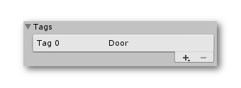
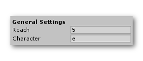
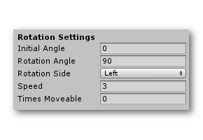
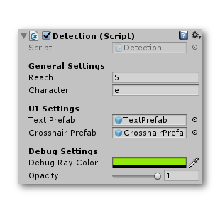
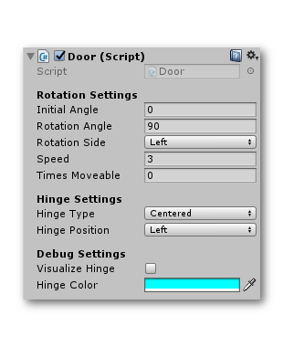
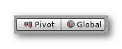
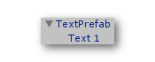
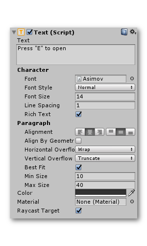

Lite Version
You can try out a basic, free version of the script before you make your purchase. It has limited functionality but will give you a sense of what to expect from the full version. You can download the free version here.
Here is a guide to get you started with the lite version of Alex's Door System!
Installation and Setup
First of all, import the asset into your project. The asset will create a folder 'Ameye' under your Assets directory.

After you've imported the asset, you'll need to create the tag 'Door'. You can simply do this by doing Tools>Alex's Door System>Create Door tag. Alternatively you could manually create the tag by doing Edit>Project Settings>Tags and Layers.
Basic Setup
Now that we're done setting up the asset, we can actually start creating some doors! We will first create a player in our scene. Make sure that the player can move around and look around in your scene. If you want to, you can use the player prefab that is included in the asset. Notice that the player has the detection component attached to it. If you are using your own player controller, make sure to add this detection component as well. In the inspector of the detection component, make sure that the reach variable is set to 5 and the character variable is set to "E".

Now our player is done and we can start creating a door! Just create a basic door shape out of a default cube and place it in your scene. After you have created a door that you're happy with, add the door component to it. Take a look at the door component. Let's set the initial angle to 0, the final angle to 90, and the speed to 2.

We've set up everything needed so let's hit play! As expected we can enter the blue trigger zone, and when we press 'E', the door will rotate 90 degrees with a speed of 2 (duration of 0.5 seconds).
Detection Component
The detection component allows the player to detect doors in your scene. It ray-casts continuously and checks what objects are in front of him/her.

| Variable | Description |
|---|---|
| Reach | Within this radius, the player is able to open/close the door. |
| Character | The character that the player has to press in order to open/close the door. |
| Text Prefab | The text that will be displayed when the player is looking at a door. |
| Crosshair Prefab | The crosshair that will be displayed at the center of the screen. |
| Debug Ray Color | The color of the line shown in scene-view that represents the ray-cast. |
| Opacity | The opacity of the debug-ray. |
Warning
Make sure the 'Reach' variable is not set to zero.'.
Door Component
The door component manages the actual rotation of the door.

| Variable | Description |
|---|---|
| Initial Angle | The initial angle of the door. |
| Rotation Angle | The amount of degrees the door will rotate. |
| Rotation Side | Whether the door should rotate left or right. |
| Speed | The speed of the rotation. |
| Times Moveable | How many times the door will be able to move. If set to zero, the door will be able to rotate an infinite amount of times. |
| Hinge Type | Whether the rotation axis of the door is centered or already correctly positioned. |
| Hinge Position | The position of the hinge. |
| Visualize Hinge | Whether or not the hinge should be visualized in the game for debugging purposed or not. |
| Hinge Color | The color of the visualization of the hinge. |
Correctly Positioned or Centered?
In the door script you have the option to select whether or not the rotation axis of the door is already correctly positioned. To check what you need to select, make sure to select pivot instead of center.

After you've done that, take a look at your door. If the pivot handle is centered, select "centered" in your door script. If the pivot handle is where the hinge should be, select "Correctly Positioned".
Changing the text prefabs?
Select the text prefab in your project that you'd like to change. Click and drag it onto your hierarchy. Click on the prefab in the hierarchy window and unfold it to select 'Text 1'.
Select 'Text 1'.

Go to you inspector window and change the settings to your liking. You can change the text, font,...

After you've completed the changes you wanted to make, re-assign it to the prefab by clicking and dragging the object 'TextPrefab' in the hierarchy window back onto the prefab in your project window. After this, remove the prefab element that's still in the hierarchy window.
The same can be done for the 'Crosshair' prefab.
Limitations
The lite version has some limitations compared to the pro version. A comprehensive list will be added here soon.
Tip
Also check out the FAQ!